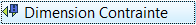

|
| Posizione nel menu |
|---|
| Draft → Quota |
| Ambiente |
| Draft, Architettura |
| Avvio veloce |
| DI |
| Vedere anche |
| Flip Dimension |
Descrizione
Crea una quotatura nel documento corrente tramite due punti che definiscono la distanza da misurare, e un terzo punto che specifica dove passa la linea di quota.
{kind=link}
Utilizzo
- Premere il pulsante
 Quota, o premere i tasti D e I
Quota, o premere i tasti D e I - Selezionare un primo punto nella vista 3D oppure digitare le sue coordinate
- Selezionare un secondo punto della vista 3D, o digitare le sue coordinate
- Selezionare un terzo punto della vista 3D, o digitare le sue coordinate
- Premere il tasto CTRL per selezionare un punto di ancoraggio.
- Premere il tasto SHIFT per ottenere un vincolo orizzontale o verticale,
- 1 : selezionare il primo punto,
- 2 : orientare la linea di quota (orizzontalmente o verticalmente),
- 3 : premere il tasto SHIFT
- 4 : selezionare il secondo punto,
- 5 : rilasciare SHIFT,
- 6 : posizionare la linea di quota, poi cliccare sul pulsante destro del mouse (che stabilisce il terzo punto).
- Premere il tasto SHIFT per commutare tra il modo diametro e il modo raggio quando si opera su un bordo curvo.
- Inserire un valore per stabilire manualmente una coordinata.
- Premere il tasto ALT, quindi selezionare un bordo esistente, la quota ricorderà a quale bordo è vincolata.
- Se in seguito il punto finale di questo bordo viene spostato, la dimensione lo segue. Ciò vale anche per le dimensioni del raggio e del diametro.
- L'icona mostrata nella Vista combinata → Progetto → Etichette & Attributi dell'applicazione corrispondente, viene visualizzata in questo modo: 
{kind=link}
- Premere il tasto ESC o premere il pulsante Cancella per annullare l'operazione o per uscire dal comando.
- La casella di controllo Continua della barra del comando attivo, permette di disegnare più dimensioni su una sola linea.
- Procedura:
- Scegliere due punti su un'area vuota della vista 3D, o su un oggetto esistente, poi un terzo punto, per dare la posizione della linea di quota (come in una quotatura semplice), poi,
- definire tutti gli altri punti che devono essere quotati,
- infine, premere il tasto ESC per convalidare, e uscire dalla funzione.
Tipi di quotature disponibili
- Quota lineare: selezionare 2 punti qualsiasi o qualsiasi bordo dritto con il tasto ALT premuto.
- Quotatura continua: descritta nella sezione Utilizzo.
- Dimensione orizzontale o verticale: premere SHIFT fino a quando viene selezionato il secondo punto.
- Diametro: selezionare un bordo curvo con il tasto ALT premuto.
- Raggio: selezionare un bordo curvo con il tasto ALT premuto e successivamente premere SHIFT.
- Dimensione angolare: selezionare due bordi dritti con il tasto ALT premuto.
L'icona mostrata nella Vista combinata → Progetto → Etichette & Attributi dell'applicazione corrispondente, viene visualizzata in questo modo:
Opzioni
- Premere X, Y o Z dopo un punto per vincolare il punto successivo al dato asse.
- Per inserire manualmente le coordinate, è sufficiente inserire il numero, quindi premere INVIO per ogni componente X, Y e Z.
- Premere CTRL mentre si disegna per agganciare forzatamente il proprio punto al punto di ancoraggio più vicino, indipendentemente dalla distanza.
- Premere SHIFT per vincolare la dimensione orizzontalmente o verticalmente, o, quando si lavora su un bordo circolare, per passare dal diametro al raggio.
- Premere R oppure fare clic sulla casella di controllo per selezionare o deselezionare la modalità Relativo. Se la modalità Relativo è attiva, le coordinate del punto successivo sono relative al precedente. In caso contrario, sono assolute, a partire dal punto di origine (0,0,0).
- Premere T oppure fare clic sulla casella di controllo per selezionare o deselezionare la modalità Continua. Se la modalità Continua è attiva, è possibile disegnare quote continue, una dopo l'altra, che condividono la stessa linea base.
- Premere ESC o premere il pulsante Cancella per uscire dal comando attivo.
- Selezionando un bordo esistente con ALT, invece di inserire punti di misura, la dimensione diventa parametrica e si ricorda a quale lato è vincolata. Se successivamente i punti finali del bordo vengono spostati, la quota li segue.
- Se si seleziona un bordo prima di avviare il comando Dimensione, anche la dimensione creata sarà parametrica.
- La direzione della dimensione può essere modificata, modificando la proprietà "Direction"
Proprietà
- DATIStart: Il punto iniziale della distanza da misurare
- DATIEnd: Il punto finale della distanza da misurare
- DATIDimline: Un punto attraverso il quale deve passare la linea di quota
- VISTADisplay Mode: Specifica se il testo della quotatura è allineato con la linea di quota oppure è frontale alla fotocamera
- VISTAFont Size: La dimensione dei caratteri
- VISTAExt Lines: Le dimensioni delle linee di estensione (tra i punti di misurazione e la linea di quota).
- VISTAText Position: Serve per forzare la posizione del testo da visualizzare
- VISTAText Spacing: Specifica lo spazio tra il testo e la linea di quota
- VISTAOverride: Specifica il testo da visualizzare al posto della, o con la quota. Utilizzare il codice $dim (minuscolo) (dim rappresenta la posizione della dimensione) nel testo per visualizzare la quota.
- VISTAFont Name: Il tipo di carattere da utilizzare per disegnare il testo. Può essere un nome di carattere, ad esempio "Arial", uno stile predefinito come "sans", "serif" o "mono", o una famiglia, ad esempio "Arial, Helvetica, sans" o un nome con uno stile come "Arial:Bold". Se il font richiesto non viene trovato nel sistema, in sostituzione, ne viene usato uno generico. Il tipo di carattere e l'altezza del testo di default possono essere stabiliti in Modifica → Preferenze → Draft → Generale → Caratteri
- VISTAArrow Type: Il tipo di simbolo terminale da utilizzare
- VISTAArrow Size: La dimensione dei simboli terminali
- VISTADecimals: Il numero di cifre decimali da visualizzare nella dimensione
- VISTAFlip Arrows: Invertire l'orientamento delle frecce
- VISTAUnit Override: Esprime la distanza in una data unità (lasciare vuoto per utilizzare l'unità di sistema) disponibile dalla versione 0.17
Script
Lo strumento Quota può essere utilizzato nelle macro e dalla console di Python utilizzando le seguenti funzioni:
makeDimension (p1,p2,[p3])
or
makeDimension (object,i1,i2,p3)
or
makeDimension (objlist,indices,p3)
- Crea un oggetto quota con la linea di quota passante per p3.
- La quota assume il tipo di linea e il colore impostati in precedenza nella Barra dei comandi.
- Ci sono diversi modi per creare una quota, secondo quali argomenti vengono passati:
- (p1,p2,p3): crea una quota standard da p1 a p2.
- (object,i1,i2,p3): crea una quota legata all'oggetto dato, misurando la distanza tra i vertici indicizzati i1 e i2.
- (object,i1,mode,p3): crea una quota legata all'oggetto dato, i1 è l'indice del bordo (curva) da misurare, e mode è "radius" o "diameter" (raggio o diametro).
- Restituisce l'oggetto appena creato.
makeAngularDimension (center,[angle1,angle2],p3)
- Crea una quota angolare dal centro dato, con la lista di angoli che viene fornita, passando per p3.
- Restituisce l'oggetto appena creato.
Esempio:
import FreeCAD,Draft p1 = FreeCAD.Vector(0,0,0) p2 = FreeCAD.Vector(1,1,0) p3 = FreeCAD.Vector(2,0,0) Draft.makeDimension(p1,p2,p3)